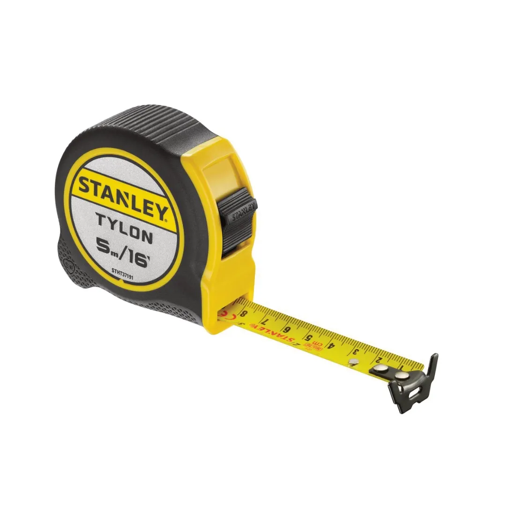
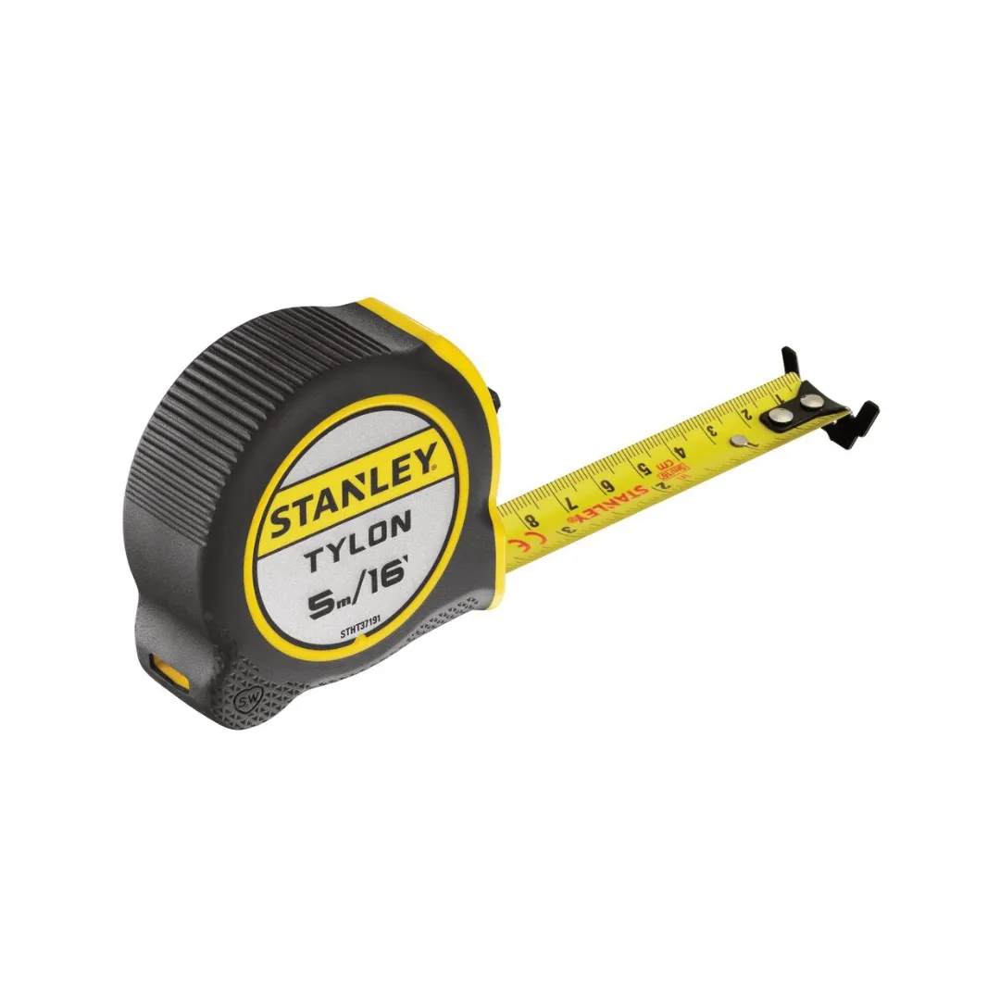
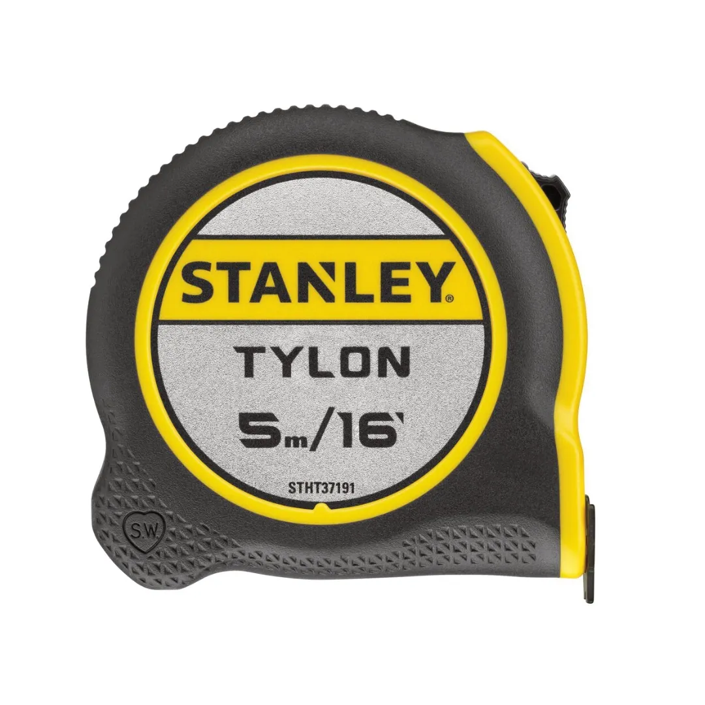
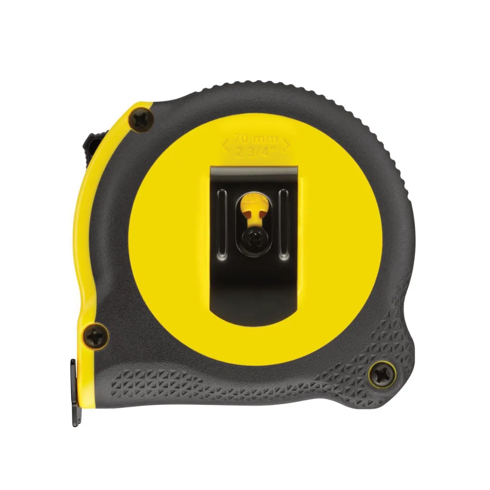
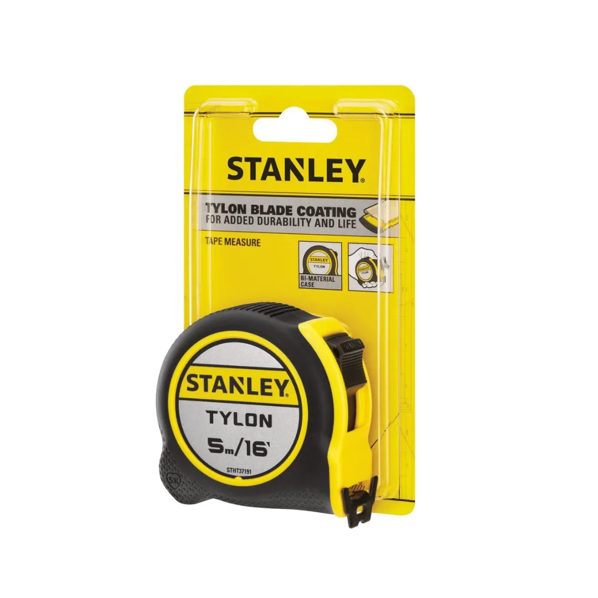

STHT37191





The STANLEY Tylon™ Measuring Tape is designed for accurate and reliable measuring on the jobsite or around the home. Its durable blade coating, compact design, and easy-to-read markings make it suitable for a wide range of measuring tasks.
Key Features
Built for everyday use, the measuring tape combines durability with ease of use. Its compact size and robust construction make it a practical addition to any toolbox.
Accuracy:
The European Commission (EC) has standardised a non-compulsory classification system for certifying tape measure accuracy, with certified tapes falling into one of three classes of accuracy: Classes I, II, and III. This tape measure has a Class II rating: accurate to ±2.30mm over 10m length
| Blade coating | Tylon™ protective coating |
| Hook type | Tru-Zero® hook |
| Blade Length | 5m |
| Blade Width | 19mm |